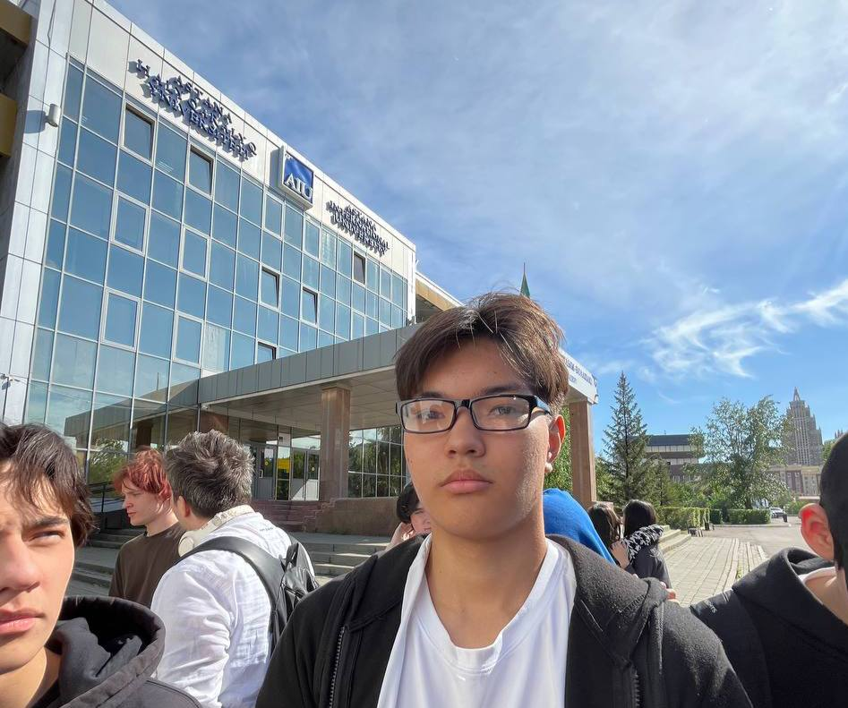
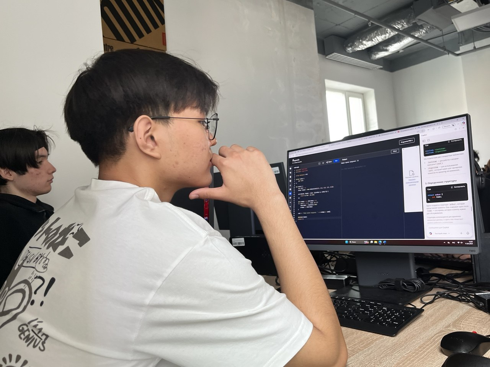
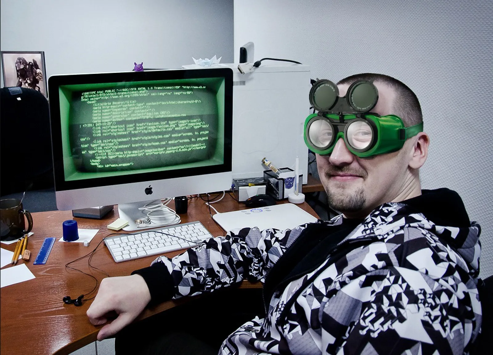

Привет! Я — Какимов Бекзат. Учусь в AIU на специальность Data Scientist, качаюсь и развиваюсь каждый день. Но не только тело, мозги тоже на прокачке!
Люблю кодить, оптимизировать C++, делать сайты — вот этот, кстати, тоже сам сделал. Вижу баг — фиксирую. Учусь думать, как инженер.
Занимался боксом, стоял на ринге — а теперь стою на ногах в жизни. Сдал ЕНТ на 93 балла, и это только начало. Бойцовский дух не пропьёшь.
Моя цель — стать специалистом, на которого можно положиться. Хочу не просто зарабатывать, а оставить след, поднять планку и вдохновить других. Главное — не останавливаться.
